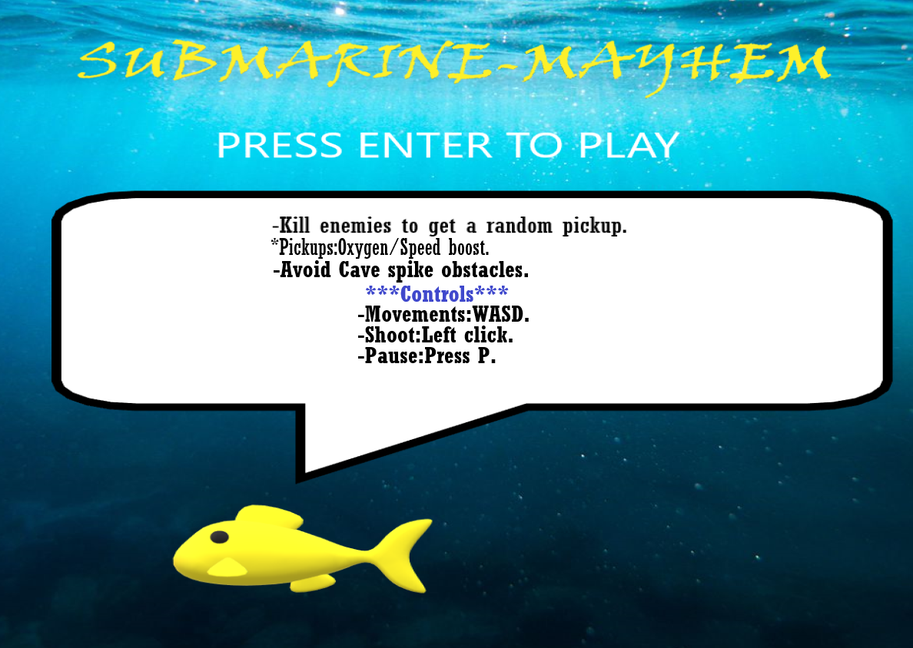
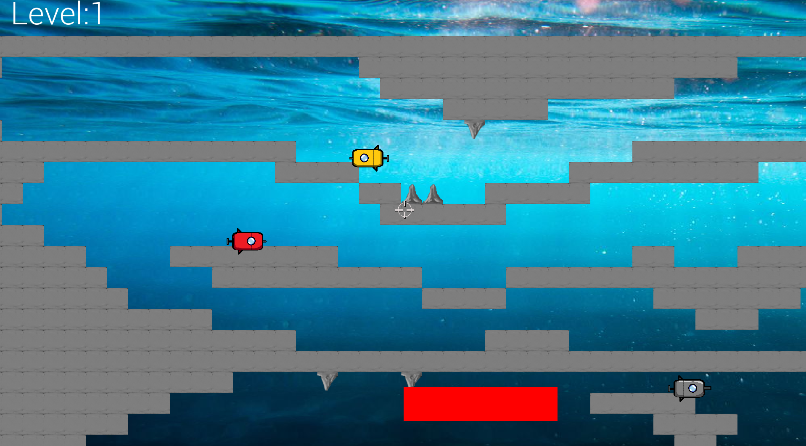
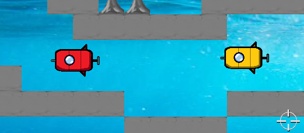

Background
Submarine Mayhem is a game created during the third-year team project of the Games Design & Development course by Luke Courtney, Ishka Yao, Adam Sheedy, Cillian Murphy. The objective of this project was to work as a team to create and document a game made in C++ using the SFML library that fits the theme of “Start from nothing”. We started the project by brainstorming ideas for the game, and planning features and additions that we deemed to be within scope. We then moved on to developing the game. We gained experience with several new things throughout the process, such as working as a team, use of Git and GitHub, and more. The development period was not flawless, but we believe that we did a good job overcoming the challenges involved in working with others to create a game and fulfil the project requirements.
Game Instructions
Controls
Main Menu –
• Press Enter to start.
In-Game –
• W/A/S/D to move.
• Mouse to aim.
• Left Mouse Button to shoot.
• P to pause.
Game over –
• Enter to restart.
Objective
- Travel through a series of underwater caves to collect a gem at the end of each one.
- Fight a number of enemies.
- Shoot enemies to defeat them and collect the pickups they drop.
- Pickups provide bonuses to stats such as movement speed, damage, and health. Enemies will shoot at the player. When hit, the player will lose oxygen (health).
- If the oxygen bar reaches zero, the player will be defeated.
Gallery


